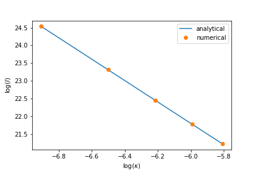

积分阶数的分析技巧
1. 问题
已知积分
\begin{align} I(\kappa) = \int_{r_c}^{\infty} r^2 F(\kappa r) \mathrm{d}r \end{align}其中 \(F(\kappa r)\) 是一个无量纲的函数, \(r_c\) 是常数. 问 \(I(\kappa)\) 在 \(\kappa \to 0\) 时的行 为.
2. 方法
令 \(x = \kappa r\) , 则
\begin{align} I = \frac{1}{\kappa^3}\int_{\kappa r_c} ^{\infty} x^2 F(x) \mathrm{d}x \sim \frac{1}{\kappa^3} \int_0^{\infty} x^2 F(x) \mathrm{d}x = \frac{\sharp}{\kappa^3} \quad \mathrm{as} \quad \kappa \to 0 \end{align}即 \(I(\kappa)\) 在 \(\kappa \to 0\) 时以 \(1/\kappa^3\) 的速度发散.
3. 评述
比较直接的思路, 是直接把 \(F(\kappa r)\) 在 \(\kappa = 0\) 处展开, 再把 \(r\) 积掉. 但是 \(F\) 形式如果未知就行不通了.
此法当然要求 \(\int_0^{\infty} x^2 F(x) \mathrm{d}x\) 收敛于一个常数, 也要 求积分限在做换元后也趋于一个常数( \(\kappa r_c \to 0\) as \(\kappa\to 0\) )
4. 数值验证
对于
\begin{align} I(\kappa) = \int_{ - \infty}^{ + \infty} r^{2} e^{ - (\kappa r - 5)^2} \mathrm{d}r \end{align}用 sage 验证 \(I(\kappa) \sim \sharp/\kappa^3\) , 其中 \(\sharp = \int_{ - \infty}^{ + \infty} r^{2} e^{ - (r - 5)^2} \mathrm{d}r\) 是一个常数:
 code: ./2021-01-13-专业笔记-order_analysis/plot.ipynb (第一次用 Sage, 有些函 数不知道怎么实现, 只能和 numpy, pyplot 混着用了 ^_^%)
# sage file
# sage file
import numpy as np
import matplotlib.pyplot as plt
x = SR.var('x')
r = SR.var('r')
κ = SR.var('κ')
F = exp(-(x - 5)**2)
I(κ) = integrate(r**2 * F(κ*r), r, -infinity, infinity)
n = 5
yy = []
xx = np.linspace(1e-3, 3e-3, n)
for i in range(n):
yy.append(I(xx[i]))
k = integrate(r**2 * F(r), r, -infinity, infinity) # analytical slope
plt.plot(log(xx), -3*log(xx) + log(k), label='analytical')
plt.plot(np.log(xx), np.log(yy), 'o', label='numerical')
plt.xlabel(r'$\log(\kappa)$')
plt.ylabel(r'$\log(I)$')
plt.legend()
plt.savefig('fig.png')
5. 致谢
Qi